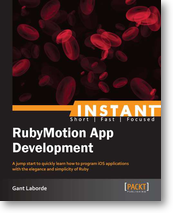

Introduction to RubyMotion

The Cool Way to Build iOS Apps
By Gant Laborde
@GantLaborde
Avid Rubyist and generally immature guy
Co-Founder of IconoclastLabs.com
Author of Numerous RubyMotion projects and Pull Requests

Author of the book RubyMotion App Development
by Packt Publishing.
Motion Meetup Organizer
RubyMotion's Monthly Meetup
meetup.RubyMotion.comMatt Garrison
@mattsgarrison
RubyMotion
RubyMotion - Wat?
/ˈro͞obē-mōSHən/
noun trademark1. A proprietary toolchain, created by HipByte SPRL, for developing native iOS and OS X applications on Apple devices and computers by statically compiling the Ruby programming language.
OR
Apps the Ruby Way
Quick Example
Objective-C button tap
[button addTarget:self action:@selector(buttonTapped:)
forControlEvents: UIControlEventTouchUpInside];
// Elsewhere
- (void)buttonTapped:(id)sender {
self.view.backgroundColor = [UIColor redColor];
}
RubyMotion button tap
button.addTarget(self, action:'button_tapped',
forControlEvents:UIControlEventTouchUpInside)
# Elsewhere
def button_tapped
self.view.backgroundColor = UIColor.redColor
end
Better Example
Objective-C button tap
[button addTarget:self action:@selector(buttonTapped:)
forControlEvents: UIControlEventTouchUpInside];
// Elsewhere
- (void)buttonTapped:(id)sender {
self.view.backgroundColor = [UIColor redColor];
}
RubyMotion button tap (with sugarcube gem)
button.on(:touch) do
self.view.backgroundColor = :red.uicolor
end
lessLike:objectiveC:
and more like_ruby
- Clay Allsopp
What's So Great About RubyMotion?
In my opinion
- Gems and Community
- Editor Independence
- Testing!
- Readability
- Natively Compiled
- The REPL
RubyMotion Analogy
RubyMotion is to Objective-C
As Coffeescript is to Javascript
... plus gems are kind of like jQuery plugins
... plus MacBacon has spec tests like Jasmine would
... plus the REPL lets you live-modify like developer tools
... plus it compiles and obfuscates your final codebase
... OK, this analogy got out of control
Let's Look At Code!
- Classic - Hello World
- Full App - Ruby Trivia
- Games!
Hello World
$ motion create test
Tests will fail
class AppDelegate
def application(application, didFinishLaunchingWithOptions:launchOptions)
@window = UIWindow.alloc.initWithFrame(UIScreen.mainScreen.bounds)
@window.rootViewController = HelloWorldController.new
@window.makeKeyAndVisible
true
end
end
class HelloWorldController < UIViewController
def viewDidLoad
p "Hai"
end
end
Now tests pass!
Hello World - REPL
main_view = UIApplication.sharedApplication.windows[0].rootViewController.view
main_view.backgroundColor = UIColor.blueColor
OR, just command click the view!
# REPL input
self.backgroundColor = UIColor.whiteColor
@label = UILabel.new
@label.text = "Hello World"
@label.sizeToFit
self.addSubview(@label)
# get down from there!
@label.center = [100, 100]
OR, use sugarcube-repl's tree command.
Code Example #2
Ruby Trivia
- sugarcube
- Teacup
- ProMotion
- BubbleWrap
- formotion
- and more ...
Let's look at the code!
Code Example #3
joybox.io
- STUFF
Thank you!
Questions?
Feel free to contact me via Gant@IconoclastLabs.com